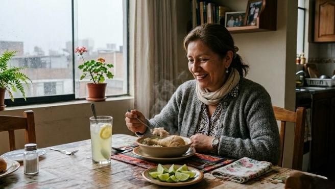

Alimentación e hidratación: cómo fortalecer tus defensas en temporada de frío, según el Minsa
El Ministerio de Salud recomienda priorizar frutas, verduras, menestras y líquidos tibios para reforzar el sistema inmunológico y prevenir infecciones respiratorias en épocas de bajas temperaturas.

Fuente: Ministerio de Salud (Minsa).
Cuando bajan las temperaturas, el organismo necesita más apoyo para mantener sus defensas activas. El Ministerio de Salud (Minsa) recomienda a la población mantener una alimentación saludable y una hidratación adecuada como medidas clave para fortalecer el sistema inmunológico y reducir el riesgo de enfermedades respiratorias, especialmente en niños, gestantes, personas adultas mayores y quienes viven con enfermedades crónicas.
La recomendación no se trata solo de comer más, sino de comer mejor: elegir alimentos naturales, variados y ricos en nutrientes que ayuden al cuerpo a responder frente a virus y bacterias. Una buena nutrición, acompañada de hábitos simples como lavarse las manos y ventilar los ambientes, puede marcar la diferencia durante la temporada de frío.
Alimentos que ayudan a proteger tus defensas
La licenciada Beatriz Quispe, especialista de la Dirección de Promoción de la Salud del Minsa, destacó la importancia de incorporar diariamente frutas y verduras ricas en vitaminas A, C y E. Estos nutrientes participan en el funcionamiento normal del sistema inmunitario y en la protección de las mucosas respiratorias, que actúan como primera barrera frente a las infecciones.
- Vitamina C: presente en naranja, mandarina, camu camu, aguaymanto, papaya y piña. Contribuye a la respuesta del organismo frente a infecciones.
- Vitamina A: se encuentra en zanahoria, zapallo, camote, verduras de hoja verde, hígado, huevo y lácteos. Ayuda a mantener sanas las mucosas respiratorias.
- Hierro y zinc: presentes en sangrecita, hígado, carnes, pescado, huevos, menestras y frutos secos. Son minerales esenciales para la producción y funcionamiento de las células de defensa.
- Proteínas: presentes en huevos, pescado, pollo, menestras y lácteos. Favorecen la recuperación y el mantenimiento de los tejidos.

Las frutas y verduras de colores aportan vitaminas y antioxidantes que apoyan las defensas del organismo.
Sopas y caldos: nutritivos y reconfortantes
Las sopas, caldos, guisos y mazamorras que forman parte de la tradición culinaria peruana no solo reconfortan en el frío: también son una forma práctica de concentrar nutrientes. Un caldo de gallina, una sopa de quinua con verduras o un guiso de lentejas pueden aportar proteínas, hierro, zinc y vitaminas en una sola preparación.
Además, los caldos calientes pueden ayudar a mejorar el movimiento mucociliar del tracto respiratorio, un mecanismo natural que facilita la expulsión de agentes patógenos antes de que generen infección. Por eso, incluir preparaciones calientes y caseras en la dieta diaria es una estrategia sencilla para cuidar la salud en días fríos.
Hidratación: un hábito que no se debe olvidar
En invierno muchas personas sienten menos sed y reducen el consumo de líquidos. Sin embargo, el Minsa recuerda que mantener una adecuada hidratación es fundamental para el funcionamiento del organismo. Beber agua segura a lo largo del día ayuda a mantener las mucosas hidratadas y favorece los procesos naturales de defensa.
Las infusiones tibias como muña, kion, manzanilla o hierba luisa también pueden ser una buena opción para hidratarse, especialmente cuando se buscan bebidas reconfortantes. Lo importante es evitar el exceso de bebidas azucaradas y priorizar opciones naturales.

Las infusiones tibias y el agua segura ayudan a mantener una buena hidratación en temporada de frío.
Hábitos que complementan una buena alimentación
La alimentación saludable es más efectiva cuando se combina con otros hábitos de cuidado. El Minsa recomienda mantener una rutina integral de protección:
- Lavado frecuente de manos: con agua y jabón, especialmente antes de comer y después de toser o estornudar.
- Actividad física regular: ayuda a mantener el bienestar general y fortalece el organismo.
- Ventilación de ambientes: abrir ventanas permite renovar el aire y reducir la concentración de virus en espacios cerrados.
- Vacunación al día: cumplir el esquema de vacunación es una medida fundamental para prevenir enfermedades respiratorias.
- Descanso adecuado: dormir bien favorece la recuperación y el funcionamiento del sistema inmunitario.
Adoptar estos hábitos no requiere grandes cambios, sino constancia. Priorizar alimentos naturales, hidratarse bien y mantener prácticas de higiene puede ayudar a que toda la familia atraviese la temporada de frío con mejores defensas y mayor bienestar.